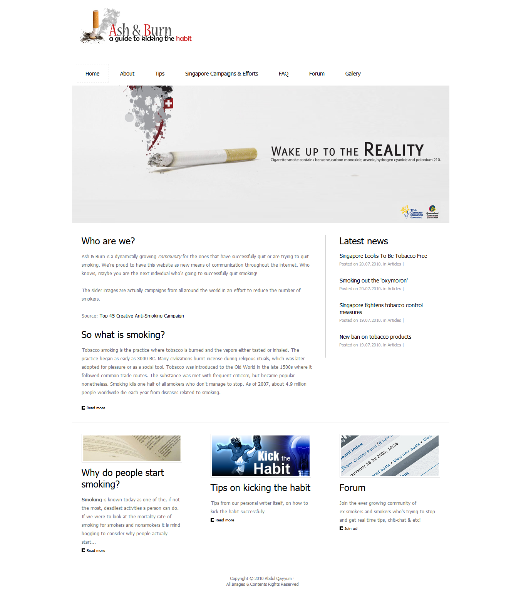

click and grab for zoom!

The first web design project done in Temasek Polytechnic during the first semester.
Created using Expression web as it was a requirement for all the pages.
The theme that I picked was 'Health', so I decided to focus more on Smoking and created a site for it.